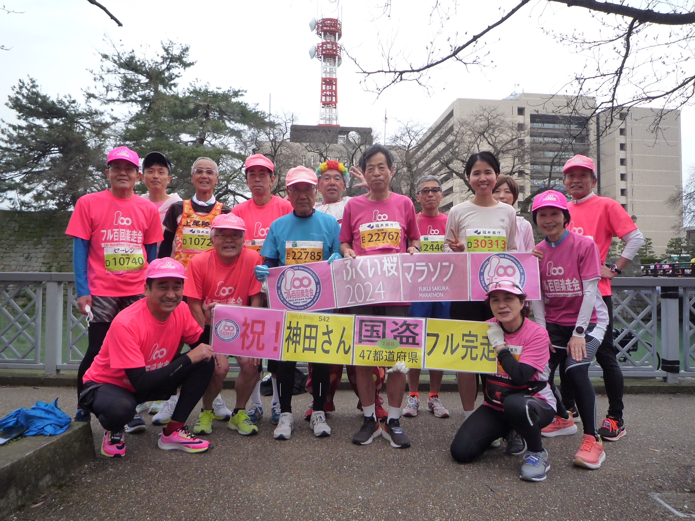

2024-03-31 06:59:53
会員No.542 (富山県:75歳)

| No | 開催地 | 開催日 | 大会回数 | 大会名 | タイム |
|---|---|---|---|---|---|
| 1 | 神奈川 | 2015-03-15 | 第1回 | 横浜 | 5:16:54 |
| 2 | 石川県 | 2015-04-19 | 2015年 | 加賀温泉郷 | 5:12:56 |
| 3 | 富山県 | 2015-11-01 | 第1回 | 富山 | 5:20:17 |
| 4 | 和歌山 | 2016-02-07 | 第21回 | 紀州口熊野 | 4:53:05 |
| 5 | 鹿児島 | 2016-03-06 | 第1回 | 鹿児島 | 4:49:36 |
| 6 | 長野県 | 2016-10-16 | 第33回 | 大町 | 5:08:07 |
| 7 | 群馬県 | 2016-11-13 | 第1回 | 渡良瀬川 | 5:25:52 |
| 8 | 静岡県 | 2016-12-11 | 第28回 | 袋井メロン | 5:16:40 |
| 9 | 千葉県 | 2017-01-29 | 第37回 | 館山若潮 | 5:10:35 |
| 10 | 福島県 | 2017-02-12 | 第8回 | いわき | 5:28:43 |
| 11 | 京都府 | 2017-02-19 | 第6回 | 京都 | 5:14:25 |
| 12 | 岩手県 | 2017-05-21 | 第1回 | 奥州きらめき | 5:53:37 |
| 13 | 北海道 | 2017-07-02 | 2017年 | 函館 | 5:14:01 |
| 14 | 山梨県 | 2017-08-12 | 第5回 | 富士登山 | 16:45:33 |
| 15 | 宮城県 | 2017-10-01 | 第1回 | 東北みやぎ | 5:20:48 |
| 16 | 新潟県 | 2017-10-09 | 第35回 | 新潟シティ | 5:43:08 |
| 17 | 岐阜県 | 2017-11-25 | 第1回 | 岐阜金華山 | 6:18:01 |
| 18 | 福岡県 | 2018-02-18 | 第5回 | 北九州 | 5:01:17 |
| 19 | 高知県 | 2018-04-01 | 第10回 | 四万十桜 | 5:26:42 |
| 20 | 岡山県 | 2018-11-11 | 第4回 | おかやま | 4:50:02 |
| 21 | 奈良県 | 2018-12-09 | 第9回 | 奈良 | 5:07:12 |
| 22 | 栃木県 | 2018-12-16 | 第5回 | はが路 | 5:11:29 |
| 23 | 兵庫県 | 2018-12-23 | 第30回 | 加古川 | 4:43:35 |
| 24 | 大阪府 | 2019-02-03 | 第41回 | 大阪42.195 | 4:58:35 |
| 25 | 熊本県 | 2019-02-17 | 第8回 | 熊本城 | 4:48:58 |
| 26 | 東京都 | 2019-03-03 | 第13回 | 東京 | 4:41:54 |
| 27 | 茨城県 | 2019-03-10 | 第7回 | 古河はなもも | 4:40:00 |
| 28 | 山口県 | 2019-03-17 | 第15回 | くすのき | 4:48:33 |
| 29 | 愛知県 | 2019-06-23 | 第91回 | 金しゃち | 6:01:16 |
| 30 | 秋田県 | 2019-09-15 | 第34回 | 田沢湖 | 5:37:28 |
| 31 | 青森県 | 2019-10-06 | 第17回 | 弘前白神 | 5:07:28 |
| 32 | 山形県 | 2019-10-20 | 第33回 | 長井 | 4:49:53 |
| 33 | 滋賀県 | 2019-11-03 | 第33回 | あいの土山 | 4:52:51 |
| 34 | 香川県 | 2019-11-24 | 第40回 | 瀬戸内海 | 5:04:11 |
| 35 | 愛媛県 | 2020-02-09 | 第58回 | 愛媛 | 5:17:32 |
| 36 | 長崎県 | 2020-02-23 | 第20回 | 五島つばき | 5:27:46 |
| 37 | 宮崎県 | 2021-12-12 | 第35回 | 青島太平洋 | 5:31:32 |
| 38 | 島根県 | 2022-12-04 | 第3回 | 松江城 | 4:50:04 |
| 39 | 三重県 | 2022-12-18 | 第1回 | みえ松阪 | 5:11:44 |
| 40 | 沖縄県 | 2023-01-15 | 第20回 | 石垣島 | 5:15:45 |
| 41 | 埼玉県 | 2023-02-04 | 第6回 | 彩湖ハートフル | 5:22:28 |
| 42 | 大分県 | 2023-03-05 | 第34回 | 岡の里名水 | 5:30:59 |
| 43 | 佐賀県 | 2023-03-19 | 2023年 | さが桜 | 5:23:27 |
| 44 | 広島県 | 2023-04-09 | 第4回 | 備北パーク | 5:39:40 |
| 45 | 鳥取県 | 2024-03-17 | 2024年 | 鳥取 | 5:45:18 |
| 46 | 徳島県 | 2024-03-24 | 2024年 | とくしま | 5:47:12 |
| 47 | 福井県 | 2024-03-31 | 第1回 | ふくい桜 | 5:51:12 |